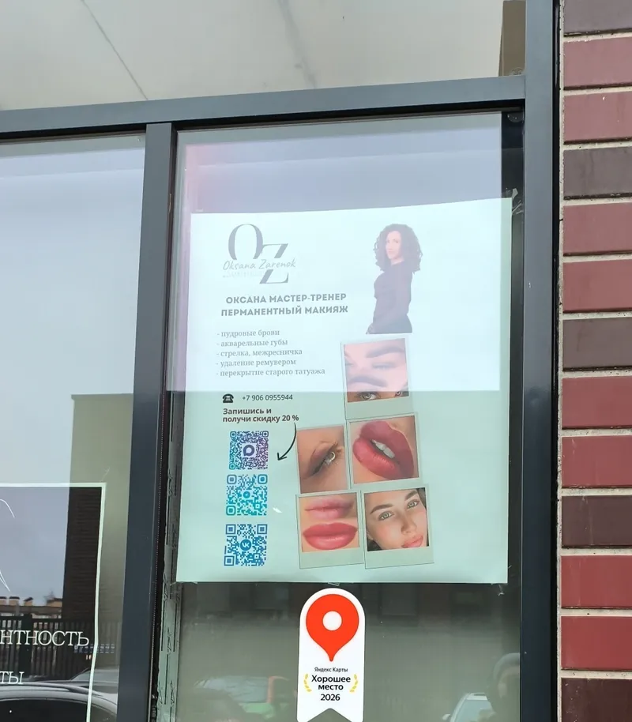

Москва · Коммунарка · проспект Куприна, 18 к1
Перманент, который заживает спокойно
Студия OZ: брови, губы и межресничка, коррекция и обучение мастеров с нуля. Ниже по дням видно, что будет после процедуры, чтобы ничего не пугало.
- Каждый день 9:00–22:00, по записи
- Оксана, мастер-тренер: учит с нуля до топ-мастера
Цены примерные, поставим ваши.
Заживление по дням
Что будет после процедуры
Выберите зону и потяните ползунок: на каждый день видно, как выглядит пигмент и что делать.
Памятка общая. Оксана поправит её под свою технику и уход.
Записаться на коррекциюЦены
Процедуры и время
Цены и длительность примерные: поставим ваши.
Брови: пудровое напыление
от 8 000 ₽около 2 ч 30 минГубы: акварель
от 9 000 ₽около 2 ч 30 минМежресничка
от 6 000 ₽около 1 ч 30 минКоррекция
от 4 000 ₽около 1 ч 30 минКонсультация и подбор цвета
бесплатнооколо 30 минОбучение
Перманент с нуля до своего потока клиенток
Оксана мастер-тренер: учит тех, кто никогда не держал машинку, и помогает уже работающим мастерам выйти на новый уровень.
Узнать про обучение- Теория. Кожа, пигменты, стерильность. [сколько дней]
- Практика на латексе. Постановка руки и техника. [сколько]
- Работа на моделях. Под присмотром тренера. [сколько моделей]
- Поддержка после курса. [что входит: чат, разбор работ, сертификат]
- Ближайший поток и цена. [дата, цена]
Онлайн-запись
Запись в OZ
Начните с бесплатной консультации: подберём форму и цвет. Подтверждение придёт в Telegram, накануне напоминание.
День
Время
Готово
Откроется бот студии: нажмите «Старт», и накануне придёт напоминание. Студия увидит ваш ник и сможет написать в Telegram. Здесь это демонстрация.
Напоминания включены. Накануне визита придёт сообщение в Telegram.

Как найти
Проспект Куприна, 18 к1
Москва, проспект Куприна, 18 к1, Коммунарка. Ищите витрину с плакатом OZ (фото из 2ГИС). Каждый день 9:00–22:00.
Вопросы
Коротко о главном
Где находится студия OZ?
Москва, проспект Куприна, 18 к1, Коммунарка. Студия работает каждый день с 9:00 до 22:00 по записи.
Сколько держится перманентный макияж?
Обычно от одного до нескольких лет: зависит от кожи, зоны, техники и ухода. Точнее мастер скажет на консультации.
Нужна ли коррекция?
Да, через 4–6 недель после первой процедуры: мастер добавляет пигмент там, где он прижился слабее.
Больно ли делать перманент?
Используется обезболивание, большинство клиенток описывает ощущения как терпимые. [как у вас: какое обезболивание]
Есть обучение перманентному макияжу?
Да, Оксана мастер-тренер и обучает с нуля. Программа и ближайший поток в разделе «Обучение».
Как записаться?
Онлайн на этом сайте, в Telegram или по телефону +7 906 095-59-44.
Для Оксаны
Что сверим, если будем делать
- Цены и время. В открытых данных их нет, на странице примерные, подписано. Пришлёте прайс, поставлю ваши.
- Памятка по заживлению. Написал по общим правилам. Поправьте под свою технику и уход, это важно для клиенток.
- Обучение. Программа, длительность, цена, ближайший поток и что получает ученица. Сделаю отдельную страницу курса.
- Фото работ. Сейчас только витрина из 2ГИС. Пришлёте работы до и после, сделаю галерею по зонам.
- Логотип. На витрине вижу логотип OZ: пришлёте файл, поставлю его вместо надписи.
- Запись и напоминания. Сейчас демонстрация: занятость придумана, заявка никуда не уходит. В готовой версии запись придёт вам в Telegram, а клиентке накануне напоминание.
Сайт сразу размечен для поиска и нейросетей: адрес, процедуры, часы и ответы на частые вопросы записаны так, чтобы Алисе и ChatGPT было из чего советовать студию. Попадание в их ответы никто не гарантирует.